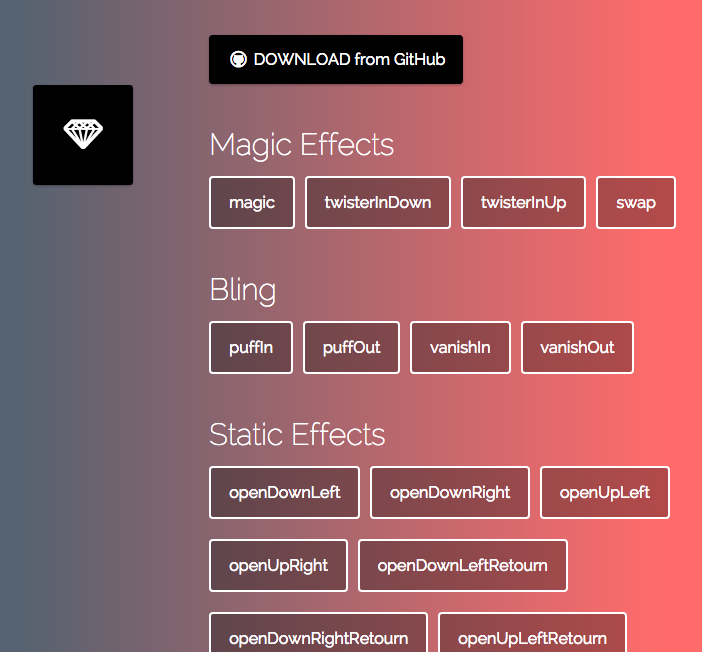
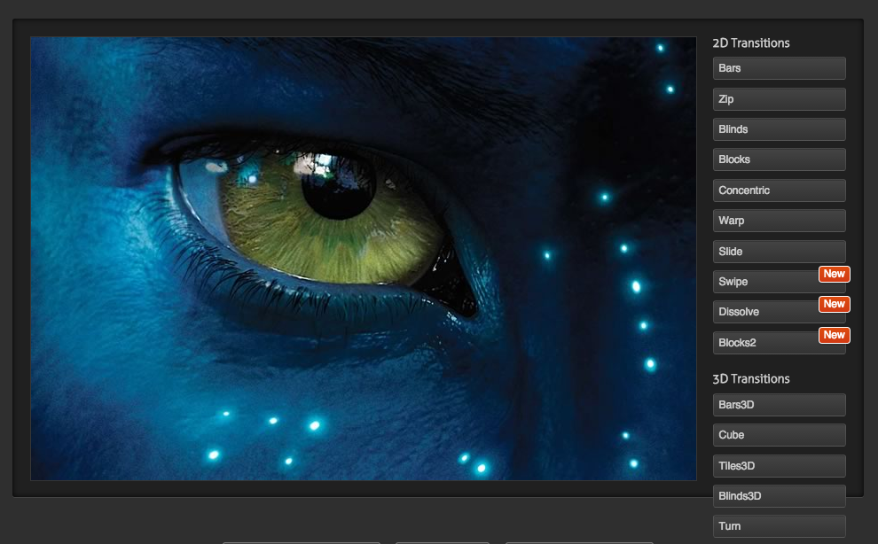

#wrapper.scene_2 .bombing {
-webkit-animation-name: bomb;
animation-name: bomb;
-webkit-animation-duration: 2s;
animation-duration: 2s;
-webkit-animation-timing-function: ease-out;
animation-timing-function: ease-out;
}
@-webkit-keyframes bomb {
0% {
background-image: url("../../img/bomb-f1.png");
}
20% {
background-image: url("../../img/bomb-f2.png");
}
40% {
background-image: url("../../img/bomb-f3.png");
}
60% {
background-image: url("../../img/bomb-f4.png");
}
80% {
background-image: url("../../img/bomb-f5.png");
}
100% {
background-image: none;
}
} 在某些Android机器下，动画特效不展示。比如Lenovo A360t。再比如：
#wrapper.scene_5.scene_5_1 .coin-1-layer {
/* 标记1 */
background-image: url("/static/pinche/oneyuan/img/coin-fri_4311eed.png");
}
#wrapper.scene_5.scene_5_1 .coin-1-layer.goDown {
-webkit-animation-name: coin-1-godown;
animation-name: coin-1-godown;
-webkit-animation-duration: 0.75s;
animation-duration: 0.75s;
-webkit-animation-timing-function: ease-out;
animation-timing-function: ease-out;
-webkit-animation-iteration-count: 1;
animation-iteration-count: 1;
-webkit-animation-fill-mode: forwards;
animation-fill-mode: forwards;
}
@-webkit-keyframes coin-1-godown {
0% {
background-image: url("/static/pinche/oneyuan/img/coin_23f44b5.png");
}
100% {
top: 47%;
left: 80%;
background-image: url("/static/pinche/oneyuan/img/coin-fri_4311eed.png");
}
} .coin-1-layer添加标记1的规则，很有可能在A360t上不显示背景变化。当然其他大部分手机即使不加，也是正常显示的。
第一个例子，A360t还是无法直接解决，只能用js动画，setInterval了。
#wrapper样式为{
position: absolute;
top: 0;
left: 0;
right: 0;
bottom: 0;
} 如果内容不足以撑开整屏高度，可能底部会空出一截，特别是#wrapper有背景色的情况下尤为明显。
这时使用：
html, body {
height: 100%;
｝ 能保证即使内容不够撑开整屏高度，底部也不会出来颜色不一的一截。但是这种情况也有bug。
如果页面布局尺寸全部使用百分比尺寸，即子元素的尺寸都按父元素的尺寸的百分比来计算的时候，
在小米手机中，如果点击页面内的编辑框，弹出输入键盘，整体往上移，可能把整屏压缩在剩余的可视空间内。
这种情况的解决办法是，强制动态给body设置高度：
$('body').css('height', $(window).height() + 'px'); 问题是图片资源在短时间内（动画时长短），来不及加载至内存，导致渲染不及。可用的方法是：图片
预加载和动画预渲染。
<div class="prerender-layer">
<div class="bomb bombing"></div>
<div class="coin-1 coin-1-godown"></div>
<div class="coin-2 coin-2-godown"></div>
<div class="coin-3 coin-3-godown"></div>
<div class="coin-4 coin-4-godown"></div>
<div class="coin-5 coin-5-godown"></div>
<div class="lamp-shine-layer-a lampClean"></div>
<div class="lamp-shine-layer-b lampClean"></div>
</div> 提供一个预渲染容器，该容器的样式为：
.prerender-layer {
position: absolute;
width: 100%;
height: 100%;
left: -200%;
} 将其移出显示区，进行预渲染。后续用到的同样的动画，就会变得流畅，不会出现白色图片。
visibility:hidden，触发强制渲染。这种方式在1块钱上下班项目中使用miniMAC/magic (3299 stars) : http://minimamente.com/example/magic_animations/

joemottershaw/animations (338 stars):
Flux Slider (1214 stars): 基于图片的动画特效
http://www.joelambert.co.uk/flux/

textillate (2065 stars):
基于文本的动画效果，是一个jquery插件，需要引入自带的animation.css文件
-webkit-font-smoothing，网页字体反锯齿设置-webkit-font-smoothing: none;
-webkit-font-smoothing: subpixel-antialiased;
-webkit-font-smoothing: antialiased; subpixel-antialiased为浏览器默认，antialiased为反锯齿效果
-webkit-touch-callout，Disables the default callout shown when you touch and hold a touch target.在iOS上可用，阻止用户按住某些元素（图片、链接）时弹出信息窗口。
-webkit-touch-callout: none; iOS下，应用于图片元素，可阻止图片复制、保存等；应用于link，可阻止链接信息弹出窗口。
user-select，阻止文本选择，以下给出比较通用的阻止文本选择的代码。 *.unselectable {
-moz-user-select: -moz-none;
-khtml-user-select: none;
-webkit-user-select: none;
/**
* Introduced in IE 10.
* See http://ie.microsoft.com/testdrive/HTML5/msUserSelect/
*/
-ms-user-select: none;
user-select: none;
} 去除Android， iOS上元素click时默认出现的边框：
-webkit-tap-hightlight-color: rgba(0,0,0,0); iOS下移除按钮原生样式：
-webkit-appearance: none; PC下移除a标签等元素点击时的虚线框：
outline: none; rotateX(angel)
rotateY(angel)
rotateZ(angel)
-webkit-transform: matrix3d(0.9993908270190958, 0, -0.03489949670250097, 0, 0, 1, 0, 0, 0.03489949670250097, 0, 0.9993908270190958, 0, 0, 0, 0, 1);
-webkit-transform: matrix3d(0.984807753012208, 0, 0.17364817766693033, 0, 0, 1, 0, 0, -0.17364817766693033, 0, 0.984807753012208, 0, 0, 0, 0, 1);
-webkit-transform: matrix3d(0.984807753012208, 0, 0.17364817766693, 0, 0, 1, 0, 0, -0.17364817766693, 0, 0.984807753012208, 0, 0, 0, 0, 1); 最早由Mozilla的Reboert O'Callahan提出，他指出CSS transitions和animation的优势 在于浏览器知道哪些动画将会发生，所以得到正确的间隔来刷新UI。
而javascript动画，浏览器不知道动画正在发生，通过setTimeout或者setInterval定期操作DOM样式，js的这种 操作只是将渲染要求添加到UI渲染队列，并不保证立即渲染，UI渲染线程可能因为其他绘制 或者用户操作，延迟渲染，甚至出现丢帧现象。
他的解决方案是创建一个mozRequestAnimationFrame()方法，接收
一个参数，该参数是一个屏幕重绘前调用的函数，该函数对DOM进行样式改变，这些改变用在下一次重绘中。
window.requestAnimFrame = ( function(){
return window.requestAnimationFrame
|| window.webkitRequestAnimationFrame
|| window.mozRequestAnimationFrame
|| window.oRequestAnimationFrame
|| window.msRequestAnimationFrame
|| function( callback ){
window.setTimeout(callback, 1000/60);
};
})();
// 调用
function animationLoop(elem){
requestAnimFrame(animationLoop);
// logic
performStyleUpdate();
} 只执行一次，再次动画需要自行再调用requestAnimFrame。
这种方式，让浏览器知道Javascript何时尝试动画，利于浏览器做更多的优化处理。
优化在于，这种方式对于一个帧中对DOM的所有操作，只进行一次Layout和Paint，如果发生动画 的元素被隐藏了，那么就不再Paint。
该事件在transition完成时触发。如果在完成前，transition被移除，该事件不会被触发。
事件特性：
跨浏览器事件名：
webkitTransitionEndoTransitionEnd, 12 as otransitionend, 12.10 as transitionendExample:
function showMessage() {
alert('Transition has finished');
}
var element = document.getElementById("slidingMenu");
element.addEventListener("transitionend", showMessage, false); 关键帧动画开始、结束，以及每次循环结束都会触发DOM事件。
animationstart属性： animationName, pseudoElement
animationend属性： animationName, elapsedTime, pseudoElement
animationiteration属性： animationName, elapsedTime, pseudoElement
事件特性：
跨浏览器事件名：
webkitAnimationEndoAnimationEndMSAnimationEnd移动系统支持情况：
检测页面： min-device-pixel-ratio
例如，针对3倍设备像素比的设备，使用@3x图片，可使用以下代码：
@media only screen and (-webkit-min-device-pixel-ratio: 3) {
selector {
...
}
...
} js API：
ratio = window.devicePixelRatio; W3C：参考页面：Media Queries详解